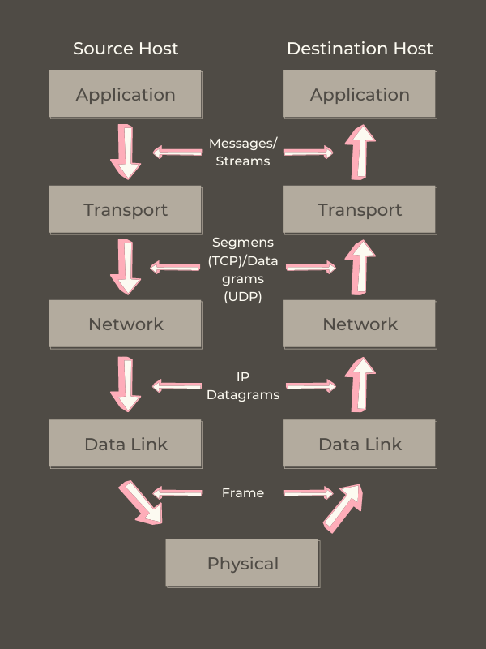
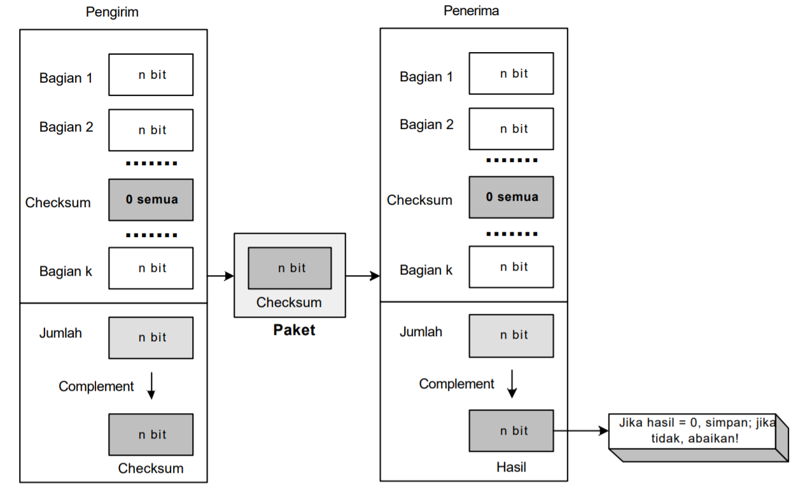

Model Referensi TCP/IP
TCP (Transimission Control Protocol) / IP (Internet Protocol) merupakan salah satu model jaringan yang dikembangkan oleh US Department of Defense (DoD). Adapun latar belakang dikembangkannya model jaringan ini disebabkan oleh kebutuhan Amerika yang mengingikan sebuah jaringan yang mampu bertahan dalam kondisi apapun, meski dalam keadaan perang. Dengan model TCP/IP akan memungkinkan komunikasi data antara dua komputer dari manapun tanpa hambatan dan dalam durasi yang cepat. Salah satu implementasi dari TCP/IP adalah internet.
Application Layer (Lapisan Aplikasi)
Lapisan ini berfungsi untuk mendefinisikan aplikasi-aplikasi yang dijalankan pada jaringan. Lapisan ini terdiri dari gabungan lapisan-lapisan session, presentation dan application pada Model OSI. Lapisan ini digunakan pada program untuk berkomunikasi menggunakan TCP/IP. Interface yang digunakan dalam berkomunikasi adalah nomor port (port number) dan socket. Contohnya adalah FTP (File Transfer Protocol), SMTP (Simple Mail Transfer Protocol), HTTP (Hypertext Transfer Protocol).
Transport Layer (Lapisan Transpor)
Lapisan ini berfungsi dalam pengiriman data antara end-to-end ke host secara handal. Lapisan inilah yang akan menjamin keutuhan data/informasi yang dikirim agar tidak terjadi kesalahan yang akan menimbulkan perbedaan saat data tersebut telah diterima. Contohnya adalah TCP (Transmission Control Protocol) dan UDP (User Datagram Protocol).
Network Layer (Lapisan Jaringan)
Lapisan ini berfungsi untuk mendukung IP dan memberikan jalur/rute pada datagrams dari sumber ke tujuan. Contohnya adalah IP (Internet Protocol) dan protokol perutean (routing protocols).
Data Link Layer (Lapisan Data Link)
Lapisan ini bertugas dalam mengatur penyaluran data frame-frame pada media fisik yang digunakan secara handal serta akan terjadi transfer data antar elemen jaringan dalam lapisan ini. Pada lapisan ini juga menyediakan pelayanan untuk melakukan deteksi dan koreksi pada data yang mengalami kesalahan saat ditransmisikan. Contohnya adalah ethernet, PPP (Point to Point Protocol).
Physical Layer (Lapisan Fisik)
Pada lapisan ini akan terjadi proses pengiriman bit-bit pada media transmisi. Contohnya adalah kabel dan NIC (Network Interface Card). Lapisan ini juga mendefinisikan besaran fisik seperti media komunikasi, tegangan, arus, dan sebagainya.
Mengapa Model Referensi TCP/IP Dibuat Berlapis?
Tujuan model referensi TCP/IP dibuat berlapis adalah untuk mempermudah dalam proses pemetaan data sesuai dengan fungsinya masing-masing di setiap lapisannya serta mempermudah dalam proses transmisi data sehingga data sampai ke tujuan.
Fungsi Transport Layer (Lapisan Transpor)
Lapisan transpor atau transport layer berfungsi dalam menyediakan protokol komunikasi end-to-end. Lapisan ini bertugas untuk menjaga keselamatan data dengan mengatur kendali aliran data (flow control), mendeteksi error (error detection) dan mengoreksi (correction), mengurutkan data (data sequencing), serta melakukan perubahan pada ukuran data (size of the packet).
Nomor Port (Port Number)
Dalam protokol jaringan TCP/IP, terdapat suatu mekanisme yang mengizinkan komputer untuk dalam mendukung beberapa sesi koneksi dengan komputer lainnya dan program di dalam jaringan, mekanisme ini disebut dengan port. Port mampu mengidentifikasi aplikasi dan layanan yang menggunakan jaringan TCP/IP. Port umumnya dikenal sebagai Port Number yang terdiri dari angka 16-bit (dua byte) dengan jumlah port maksimum untuk adalah 65536 buah yang diklasifikasikan sesuai dengan protokol transpor yang digunakan. Berdasarkan penomorannya, port terbagi menjadi tiga jenis yang diantaranya adalah :
1. Well-known Port
Range port ini berkisar antara 0 hingga 1023. Nomor Port yang termasuk dalam jenis ini selalu merepresentasikan layanan jaringan yang sama dan ditetapkan oleh IANA (Internet Assigned Number Authority) Port jenis ini didefinisikan dalam RFC 1060. Adapun beberapa contoh dari Well-known Port yang sering digunakan adalah FTP (File Transfer Protocol), SMTP (Simple Main Transfer Protocol, HTTP (Hypertext Transfer Protocol), POP3 (Post Office Protocol version 3), IMAP (Internet Message Access Protocol).
2. Registered Port
Range Port ini berkisar dari 1024 hingga 49151. Port jenis ini umumnya digunakan untuk mendukung aplikasi dan sistem operasi yang dibuat oleh vendor-vendor komputer atau jaringan yang berbeda. Registered Port ini telah didaftar oleh IANA (Internet Assigned Number Authority) namun, tidak dialokasikan secara permanen, sehingga memungkinkan penggunaan nomor port yang sama.
3. Dynamically Assigned Port
Range port ini berkisar dari 1024 hingga 65536 yang dapat digunakan ataupun dilepaskan sesuai dengan kebutuhan. Port jenis ini merupakan port yang telah ditetapkan oleh sistem operasi atau aplikasi yang digunakan untuk melayani permintaan dari pengguna (user).
Nomor port umumnya digunakan dalam hal-hal terkait dengan pengalamatan jaringan. Dalam jaringan TCP/IP, TCP dan UDP tentunya menggunakan set port yang miliknya sendiri yang bekerja sama dengan IP (Address). Dalam hal ini, nomor port berfungsi layaknya ekstensi telepon. Begitu pula dengan komputer yang juga memiliki alamat utama dan satu set nomor port yang digunakan untuk menangani koneksi masuk dan keluar. Dengan cara yang sama yakni satu nomor telepon dapat digunakan oleh semua karyawan dalam gedung itu, satu IP (Address) mampu digunakan untuk berkomunikasi dengan berbagai jenis aplikasi dengan menggunakan satu router, IP (Address) berfungsi untuk mengidentifikasi komputer tujuan dan nomor port berfungsi untuk mengidentifikasi aplikasi tujuan.
UDP (User Datagram Protocol)
UDP merupakan singkatan dari User Datagram Protocol yang terdapat di lapisan transpor (Layer Transport). UDP umumnya disebut sebagai protokol transpor yang tidak handal (Unrealiable Transfer Protocol). Hal ini disebabkan karena UDP yang tidak memberikan pelayanan menggunakan IP apapun kecuali dalam komunikasi secara process-to-process dan host-to-host. Penggunaan UDP sangat tepat digunakan dalam proses pengiriman pesan yang relatif kecil dan tidak terlalu memerlukan kehandalan dalan proses pengirimannya. Hal ini disebabkan pengiriman data melalui UDP lebih menekankan kepada kecepatan dibandingkan kehandalan. Secara umum, UDP dapat digunakan dalam beberapa hal, yang diantaranya :
1. Penggunaan UDP yang tepat dapat dilakukan dalam proses komunikasi request-respond yang sederhana.
2. UDP cocok untuk digunakan dalam mekanisme kendali aliran (flow control) dan error internal. Seperti dalam TFTP (Trivial File Transfer Protocol) yang memiliki kendali aliran dan error sendiri pada prosesnya.
3. UDP memiliki kemampuan multicasting yang sudah tertanam dalam perangkat lunak (software) UDP.
4. UDP dapat digunakan pada pengaturan proses, seperti pada SNMP (Simple Network Management Protocol).
5. UDP dapat digunakan untuk beberapa protokol dalam melakukan proses rutin (update), seperti Routing Information Protocol.
Adapun karakteristik dari UDP yakni sebagai berikut :
1. End-to-end
UDP dapat mengidentifikasi proses yang sedang berjalan dalam komputer.
2. Connectionless
UDP memiliki paradigma tanpa membuat koneksi sebelumnya dengan tanpa adanya kontrol.
3. Message-oriented
UDP mampu mengirimkan dan menerima data secara segmen.
4. Best-effort
UDP mengutamakan pengiriman yang terbaik.
5. Arbitrary interaction
UDP dapat menerima dan mengirim data/informasi dari banyak proses.
6. Operating system independent
UDP berdiri sendiri dalam sistem operasi (Operating System).
Dengan menggunakan UDP (User Datagram Protocol), komputer yang bertindak sebagai pengirim data dan komputer yang bertindak sebagai penerima data tidak perlu lagi melakukan negosiasi saat melakukan pertukaran data atau biasa disebut dengan validasi data. Hal ini disebabkan oleh kemampuan UDP yang dalam melakukan pengiriman data melalui interaksi antara pengirim dan penerima lebih sedikit dibandingkan dengan menggunakan TCP (Transmission Control Protocol). Adapun tahapan cara kerja UDP adalah sebagai berikut :
1. Suatu paket berisi client port dan port sumber yang berbentuk file text dikirim di dalam UDP Header.
2. Paket isi port client dan port sumber audio dikirm ke server dalam UDP Header.
3. Adanya UDP bertujuan membaca nomor port tujuan dan proses data.
4. Paket yang asli memiliki port tujuan, sehingga server mampu untuk mengirimkan kembali data ke FTFP Client.
5. Ketika client mengirimkan file audio, maka proses di poin ke 3 dan 4 akan terulang kembali.
6. Apabila suatu aplikasi ingin melakukan pengiriman data, UDP tidak akan melakukan proses buffer ataupun proses fragmen kepada setiap data yang masuk.
7. Sebab UDP tidak melakukan proses data terutama tidak melakukan proses fragmen terhadap data yang dikirimkan oleh aplikasi, hal ini akan menimbulkan kemungkinan terjadinya ukuran data yang lebih besar dari MTU (Maximum Transmission Unit). Sehingga proses untuk melakukan fragmen data terjadi pada lapisan IP.
Checksum
Checksum merupakan suatu urutan angka dan huruf yang berfungsi dalam melakukan proses pemeriksaan terhadap kesalahan data yang terjadi saat proses transmisi atau penyimpanan. Checksum sendiri dapat diartikan sebuah field yang berisi 16-bit dengan ukuran data yang tetap yang dihitung dari suatu blok data digital yang bertujuan untuk mendeteksi kesalahan yang mungkin terjadi pada saat proses transmisi atau penyimpanan. Perhitungan checksum pada UDP tentunya tak sama dengan IP maupun pada ICMP. Dalam melakukan perhitungan checksum pada UDP akan melibatkan tiga bagian yang diantaranya pseudoheader, header UDP, serta data yang berasal dari lapisan aplikasi (application layer).
Proses ini dimulai dari pseudoheader yang merupakan bagian dari header paket IP pada user datagram yang dibungkus dengan mengisi beberapa bagian dengan 0. Apabila pseudoheader tidak dimuat dalam checksum, kemungkinan user datagram masih utuh, namun jika header IP mengalami kerusakan kemungkinan data yang dikirimkan akan sampai kepada host yang salah. Pada bagian kode protokol berfungsi dalam menjamin bahwa paket merupakan UDP bukan protokol lapisan transpor lainnya. Walaupun menggunakan protokol yang berbeda seperti menggunakan UDP dan TCP, nomor port tujuan bisa mengalami kesamaan. Misalkan UDP memiliki nomor dari kode protokol yakni 17, jika terjadi perubahan nilai saat proses transmisi, maka dalam perhitungan checksum akan mendeteksi perubahan nilai tersebut dari sisi penerima yang kemudian membatalkan paket UDP. Hal ini dilakukan untuk menghindari terjadinya transmisi pada protokol yang salah.
Checksum sendiri tak hanya digunakan di UDP, TCP/IP juga menggunakan checksum yang tak lain juga digunakan dalam mendeteksi error. Adapun perhitungan checksum terbagi menjadi dua yang diantaranya adalah :

Perhitungan checksum pada sisi pengirim
Dalam sisi pengirim, paket akan dibagi menjadi n-bit bagian (n biasanya 16) yang kemudian bagian-bagian tersebut akan ditambahkan menggunakan metode aritmatika (one's complement)
1. Paket dibagi ke dalam k bagian, yang setiap bagiannya terdiri dari n bit.
2. Seluruh bagian tersebut kemudian ditambahkan menggunakan metode aritmatika (one's complement).
3. Hasil akhir dari proses tadi akan dikomplementasikan membentuk checksum
Perhitungan checksum pada sisi penerima
1. Paket dibagi ke dalam k bagian, yang setiap bagiannya terdiri dari n bit.
2. Seluruh bagian tersebut kemudian ditambahkan menggunakan metode aritmatika (one's complement).
3. Hasil dari proses tadi akan dikomplementasi.
4. Jika hasil akhir bernilai 0, maka paket tidak mengalami kerusakan dan dapat diterima. Namun, sebaliknya apabila hasil akhir tidak bernilai 0, maka paket akan ditolak.